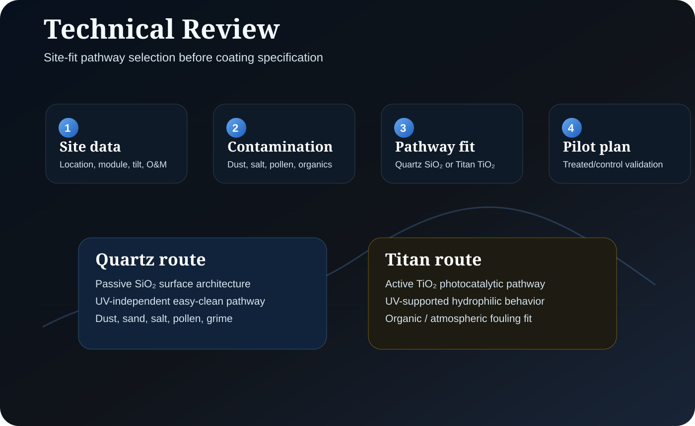

Location and PV context
Market, module type, tilt, mounting, access limitations, water availability, current cleaning method and O&M cadence.
Use this route when a buyer needs a structured assessment of Quartz, Titan, or a treated/control pilot pathway based on operating conditions, contamination profile, UV context and O&M data.

Market, module type, tilt, mounting, access limitations, water availability, current cleaning method and O&M cadence.
Dust, sand, pollen, salt, grime, bird lime, biological growth, atmospheric residue or other site-specific contamination.
SolarEX reviews whether Quartz, Titan, a treated/control pilot, or no coating route is the most defensible next step.
Quartz is assessed for passive UV-independent SiO₂ easy-clean behavior. Titan is assessed for UV-supported TiO₂ photocatalytic and hydrophilic behavior.
Where evidence is not yet project-specific, SolarEX should frame the next step as a pilot hypothesis with treated/control comparison.
ROI outputs must remain scenario-labeled until connected to site energy value, cleaning burden, contamination pattern and maintenance records.
Privacy/GDPR handling: submitted information should be used only for SolarEX technical and commercial evaluation unless the user has explicitly accepted additional follow-up use.